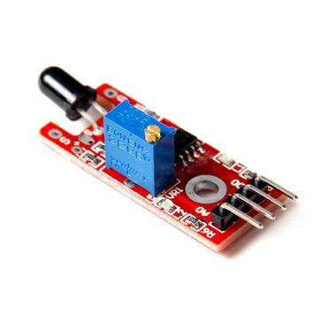
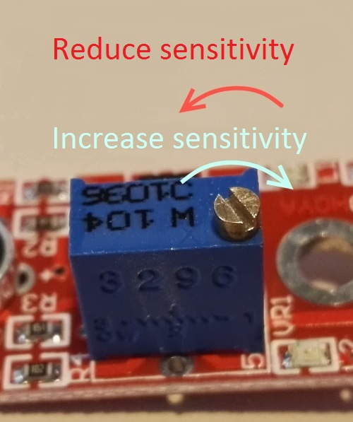

Detecció de foc amb infraroigs
El mòdul KY-026 és un sensor d’infraroigs que es pot fer servir per a fer detecció de foc, ja que detecta flames de longituds d’ona que van de 760 nm a 1100 nm.


Girant el cargol es pot ajustar la sensibilitat del sensor.

import RPi.GPIO as GPIO
import time
FlamePin = 11
def init():
GPIO.setmode(GPIO.BOARD)
GPIO.setup(FlamePin, GPIO.IN, pull_up_down=GPIO.PUD_UP)
def myISR(ev=None):
print "Flame is detected!"
def loop():
GPIO.add_event_detect(FlamePin, GPIO.FALLING, callback=myISR)
while True:
pass
if __name__ == '__main__':
init()
try:
loop()
except KeyboardInterrupt:
print 'The end!'